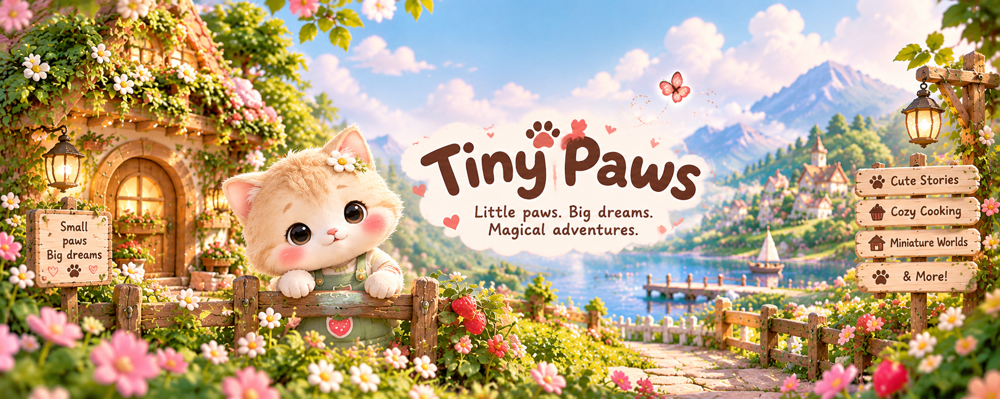

PAW_WORLD
🐾 Where Every Paw Has a Story!🐾 Where Every Paw Has a Story! 🐾 Where Every Paw Has a Story!🐾 Where Every Paw Has a Story!
I use resources from MDN
🐾 Where Every Paw Has a Story!🐾 Where Every Paw Has a Story! 🐾 Where Every Paw Has a Story!🐾 Where Every Paw Has a Story!
story of a cute mochi who live in paws world where every paw has a story..

Mochi was a cute little bunny who dreamed of exploring the world. 🐰 One day, Mochi packed a tiny bag and began a magical adventure. 🎒 He visited beautiful countries, tasted yummy foods, and made new friends. 🌍 Every place taught Mochi something special about the world. 💖 At the end of his journey, Mochi returned home with a heart full of happy memories. ✨